Expert
An on-demand advice app that connects you with a verified professional for one specific question.
- Project type
- UX case study, concept
- Year
- 2025
- Role
- UX research and design
- Scope
- Research to high-fidelity UI, six usability tests

The problem01
One specific question.
No good place to ask it.
When you need advice on a contract, a career move or a design problem, a course is too slow, AI is too generic and your network is hit-or-miss. Expert is a concept for booking a short session with a verified professional instead.
What changed my direction02
Two themes, not a feature list
I interviewed people about how they look for expert advice now, and clustered what they said. Two pain points kept coming back: knowing whether someone is the right fit before you book, and finding a moment that fits your schedule rather than theirs.
Those two themes decided what every screen had to do. Anything that didn’t build trust or remove scheduling friction became a nice-to-have.
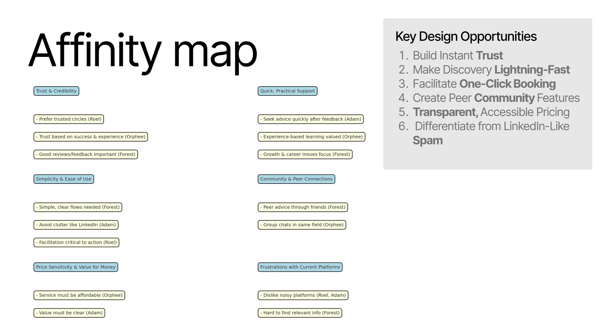
Two ways people book03
Same problem, two speeds
The two personas from the research mattered most as two booking behaviours.
Needs just enough trust to decide fast, and will pay for confidence.
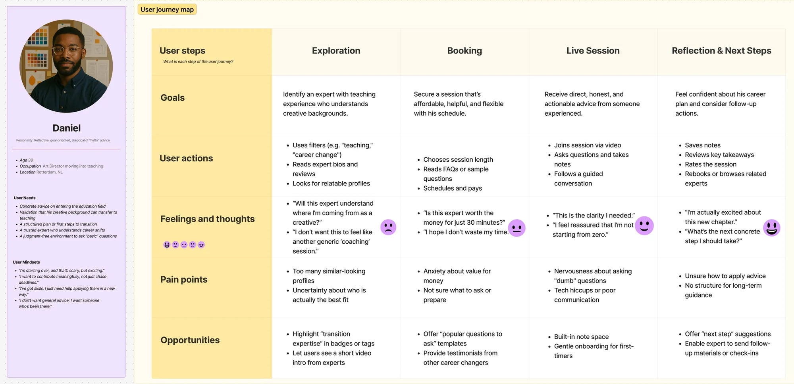
Wants to compare options before committing to anyone.
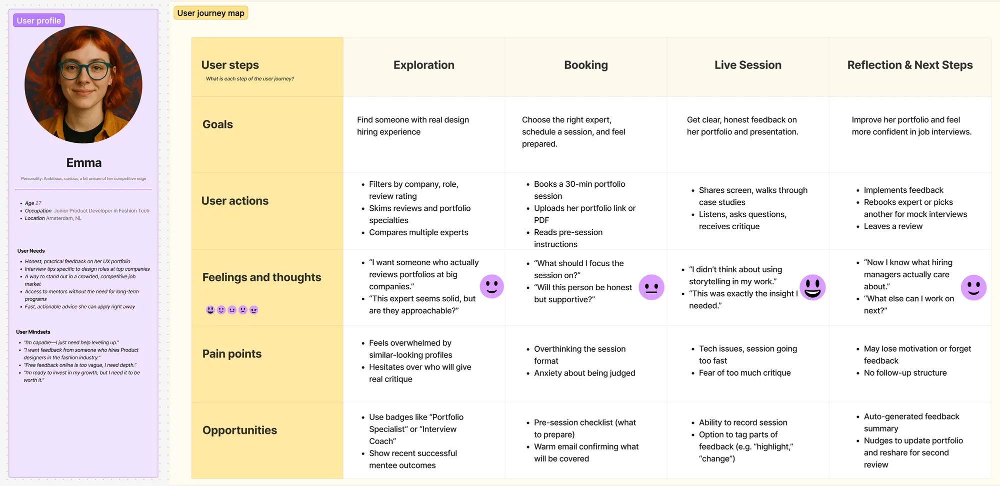
Key decisions04
Built around trust and timing
- 01
Put trust signals before the booking button
- Why
- People decide whether to book on the profile, not after.
- Evidence
- Theme one from the interviews. Later, in testing: “Diplomas and reviews make me trust it” and “Portfolios prove credibility instantly.”
- Changed
- Profiles show credentials, reviews and portfolio work above the fold, before any booking action.
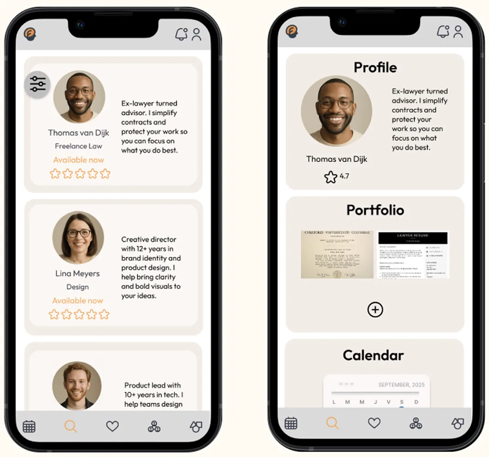
Expert list and profile with portfolio and calendar - 02
Show availability where people choose
- Why
- Clicking into every profile to check a time is exactly the friction the interviews described.
- Evidence
- Theme two. In testing: “Availability calendar is key, makes booking clear.”
- Changed
- Each expert card shows whether they’re available now; the profile ends in a calendar, and the booking flow starts from there.
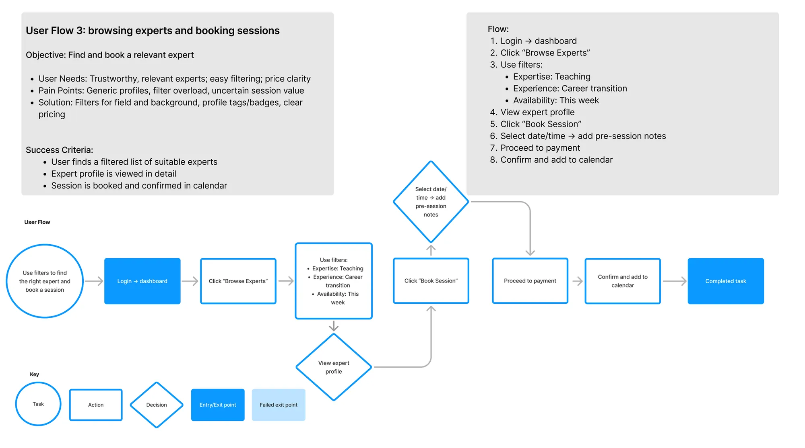
The booking flow, the one that carries the core problem 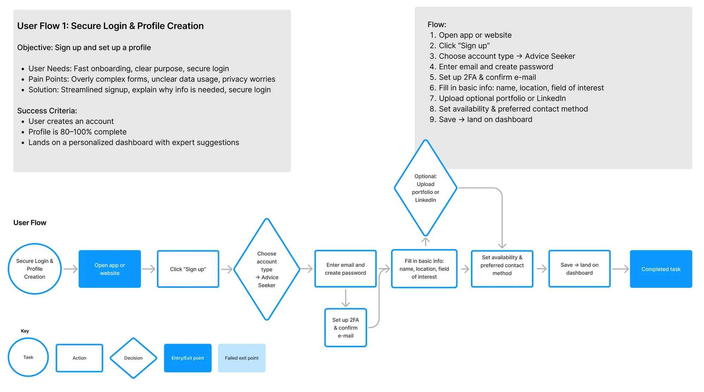
Onboarding flow 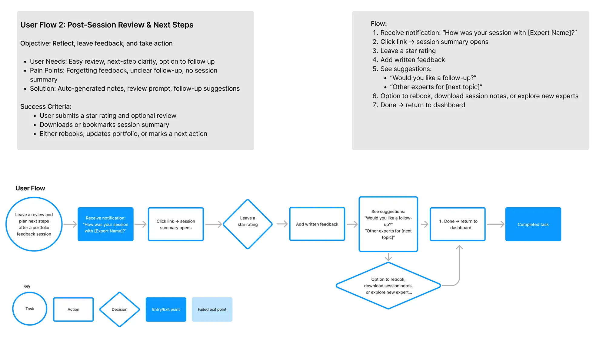
Post-session flow
Iteration05
Three passes, two screens
The wireframes went through low, mid and high fidelity. Two screens show what actually changed between passes.
Expert profile
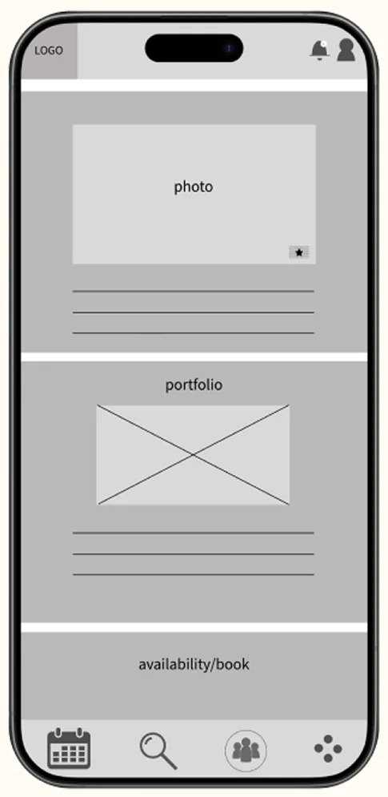
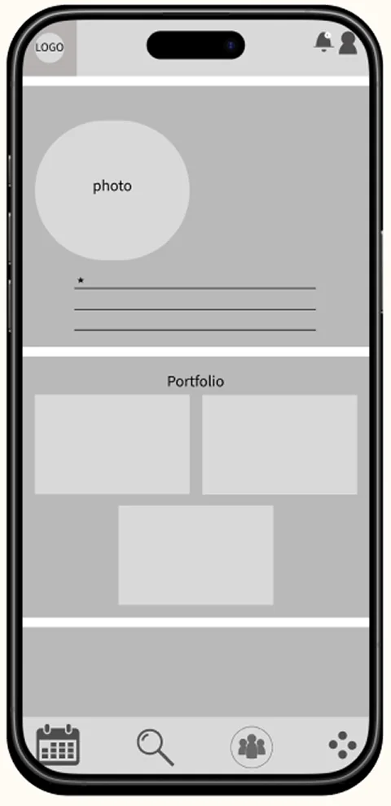
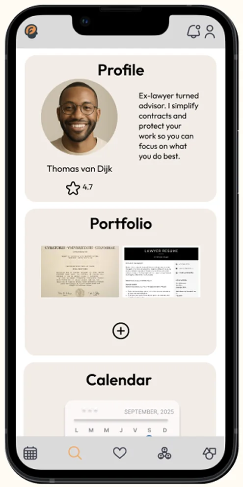
Leave a review
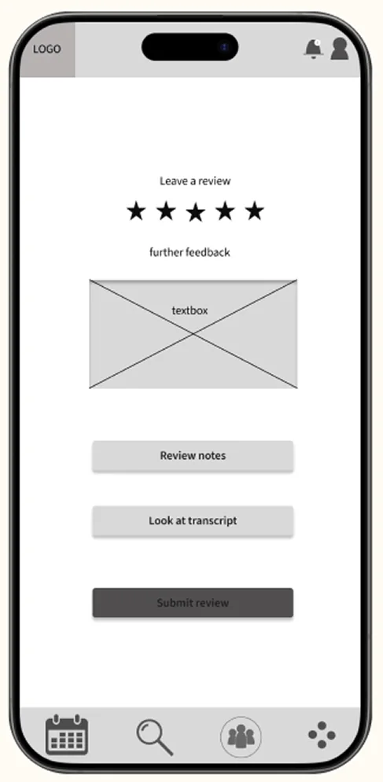
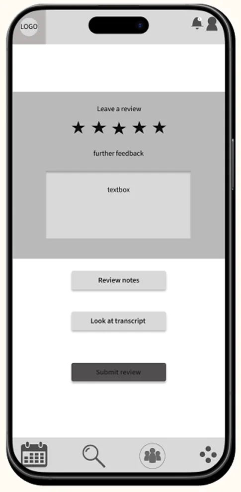
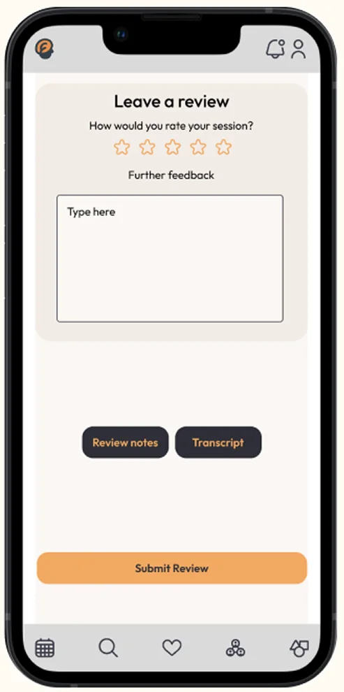
Iteration06
Making availability legible at a glance
In the first version, “Not available” used the same orange as an available expert. At a glance the two read the same. In the revision the unavailable state drops back to grey, so only available experts draw the eye.
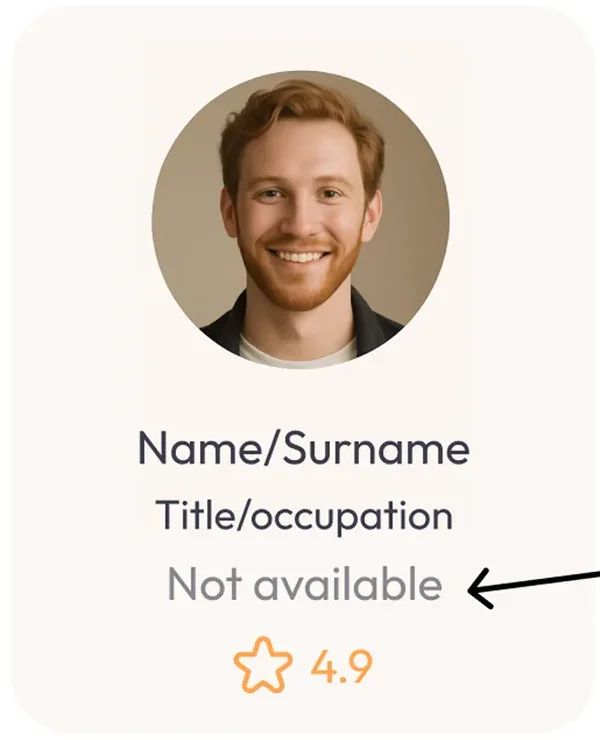
Validation07
Six tests, and what came out of them
I tested the prototype with six participants across both behaviours. Booking held up. These were the problems that came up more than once:
- 4 of 6didn’t understand some icons and found them by trial and error.
- 2 of 6couldn’t find their way back to the Home / Dashboard.
- 2 of 6found the Submit Review button less visible than Transcript and Notes.
One screen had both of the first two problems: after a session, the only way out was an unlabelled close icon. Below is the change. Labelling the remaining icons, making Submit Review the primary action and clarifying time zones are documented as next steps, not yet designed.
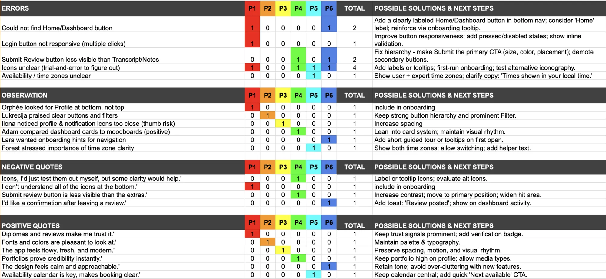
Iteration08
A clear way out after a session
Version A ended the session with a close icon in the corner. Version B replaces it with a labelled “Return to dashboard” button and brings the type in line with the rest of the app.
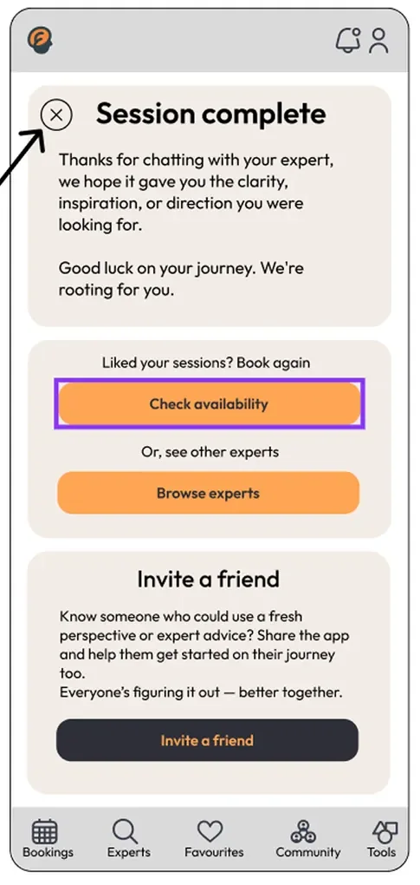
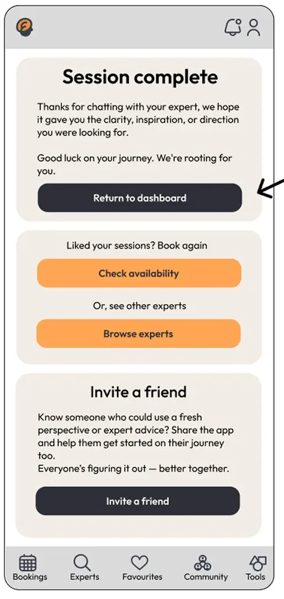
Smaller refinements09
Two things I changed after feedback
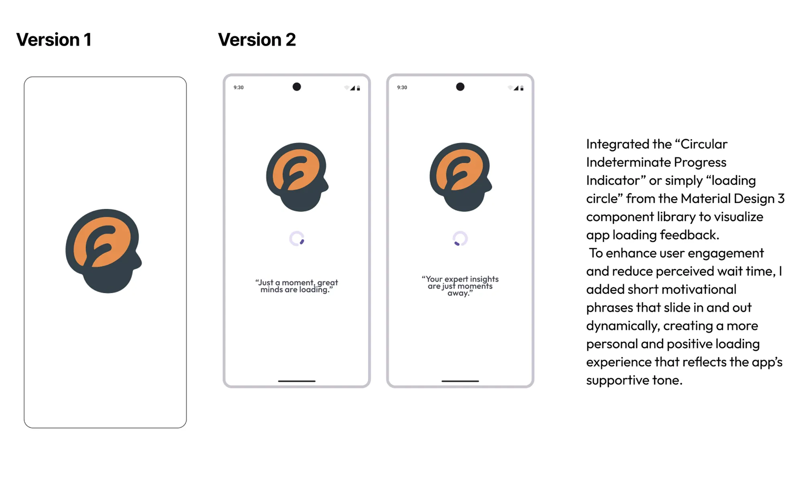
- Earlier
- A logo on an empty screen while a session loads.
- Problem
- The wait before an expert joins is the most loaded moment in the app, and a static screen gives no sign that anything is happening.
- Change
- A progress indicator with short, supportive lines that change while you wait.
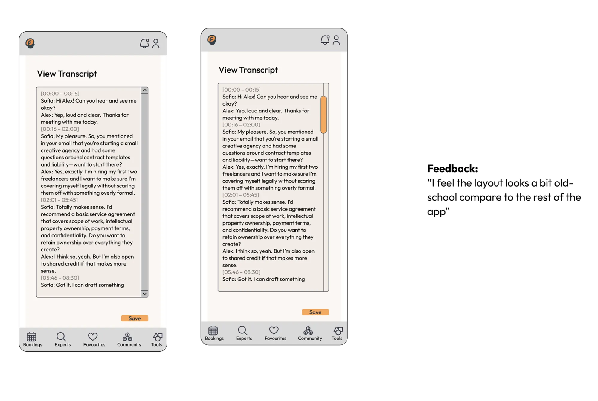
- Earlier
- A default system scrollbar in the transcript view.
- Problem
- Peer feedback: “I feel the layout looks a bit old-school compared to the rest of the app.”
- Change
- A slim scroll indicator in the app’s own colour.
Reflection10
What I’d do differently
- Still open
- Trust before someone even tries the app. The design builds trust from booking onward, but “should I try this at all?” is where most people would drop off. I never researched that moment.
- Next
- The documented next steps from testing: labels for the unclear icons, Submit Review as the primary action, and both time zones shown on bookings.
- What it taught me
- The most useful decisions in this project came from the affinity map, not from the pixels.